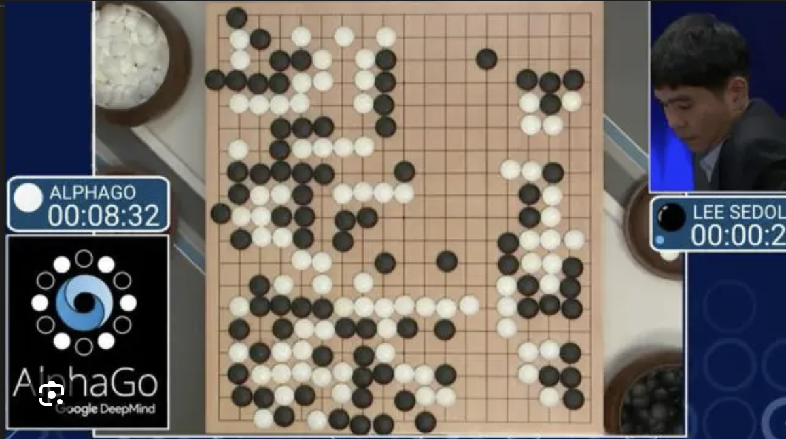

La brecha
Todos usan IA.
Casi nadie
entiende cómo
funciona.
Hoy no les voy a enseñar a usar ChatGPT. Hoy van a entender la tecnología que va a definir sus carreras.
Levanten la mano si usaron IA esta semana.
Ahora: levanten la mano si pueden explicar cómo funciona.
Hoy
Hoja de ruta
70 años
de intentos
La IA no apareció en 2022. Lleva 70 años intentándolo.
011950
Alan Turing
"Computing Machinery and Intelligence" — el paper que lo empezó todo.
No preguntó "¿pueden pensar las máquinas?" sino "¿pueden comportarse como si pensaran?"
Esa distinción sigue siendo relevante hoy. El Test de Turing no mide inteligencia — mide imitación convincente.
1956
Conferencia de Dartmouth
El verano en que se inventó la Inteligencia Artificial — literalmente. Cuatro investigadores convencieron a la Fundación Rockefeller de financiar un taller de 2 meses en Dartmouth College, New Hampshire.
La propuesta original
- "Cada aspecto del aprendizaje puede describirse tan precisamente que una máquina puede simularlo"
- Meta: resolver lenguaje, abstracción, creatividad y auto-mejora en un verano
- Resultado: no resolvieron nada, pero le dieron nombre al campo
1956 — Los fundadores
Las mentes detrás del nombre
John McCarthy
Inventó el término "Inteligencia Artificial". Creó el lenguaje LISP, que se usaría durante décadas en IA.
Marvin Minsky
Cofundó el laboratorio de IA del MIT. Más tarde, irónicamente, sería quien frenaría el campo con su libro sobre perceptrones.
Claude Shannon
El padre de la teoría de la información. Sin su trabajo, ni internet ni la IA existirían.
El optimismo
Pensaron que la IA general estaba a 20 años. 70 años después, seguimos sin alcanzarla.
1958
El Perceptrón
Frank Rosenblatt construye el Mark I Perceptron en Cornell — una máquina física del tamaño de un armario que podía aprender a reconocer formas simples.
El hype mediático
- The New York Times, 1958: "La Marina revela un embrión de computadora que podrá caminar, hablar, ver y reproducirse"
- Rosenblatt predijo: "percebirá, reconocerá e identificará su entorno sin entrenamiento humano"
- La primera red neuronal. La primera promesa incumplida.

1969 — El golpe
Minsky destruye el sueño
Minsky y Papert publican "Perceptrons" — un libro que demuestra matemáticamente que los perceptrones simples no pueden resolver problemas básicos como la función XOR.
Lo que demostraron
- Una sola capa de neuronas no puede aprender patrones no lineales
- Las limitaciones eran fundamentales, no de ingeniería
Lo que no vieron
- Redes de múltiples capas SÍ podían resolver estos problemas
- Pero en 1969 no existía el poder de cómputo para entrenarlas
Primera vez que el hype superó la realidad. No sería la última.
1970s — 1980s
Primer
invierno
Los fondos se secan. Las promesas no se cumplieron.
Sistemas expertos
- Basados en reglas escritas por humanos, no aprendizaje
- Funcionaban en dominios estrechos, fallaban fuera de ellos
- Lección: las reglas humanas no capturan la complejidad del mundo real
1990s
Machine Learning
emerge
Los sistemas expertos colapsan. Pero silenciosamente, los enfoques estadísticos comienzan a funcionar.
El cambio clave
- En vez de programar reglas, dejar que la máquina encuentre patrones en datos
- Deep Blue vence a Kasparov (1997) — pero es fuerza bruta, no "inteligencia"
- Vencer en ajedrez no es pensar. Es calcular 200 millones de posiciones por segundo.
2012
La revolución
deep learning
ImageNet 2012: AlexNet aplasta a la competencia. El error de clasificación cae del 25% al 16% — usando una red neuronal profunda.
El momento en que datos + cómputo + algoritmos convergieron.
Ejemplo
¿Cómo aprende una red neuronal?
Imaginen un cerebro artificial que quiere aprender a reconocer un gato en una foto. En vez de decirle "tiene orejas, bigotes y cola", le mostramos miles de imágenes:
"Esto ES un gato" 🐱
"Esto NO es un gato" 🚗
"Esto ES un gato" 🐱
Al principio adivina mal. Pero cada vez que se equivoca, se corrige un poco. Dentro del cerebro hay capas de "decisores" diminutos (neuronas):
Por eso se llama deep learning: entre más capas (profundidad), más complejo lo que puede reconocer.
2016
AlphaGo
DeepMind vence a Lee Sedol, campeón mundial de Go. Resultado: 4-1.
Por qué importa
- Go tiene más posiciones posibles que átomos en el universo
- No se puede resolver por fuerza bruta como el ajedrez
- La máquina aprendió estrategia e intuición
- Movimiento 37: una jugada que ningún humano haría, pero que resultó brillante

2017
"Attention Is
All You Need"
8 investigadores de Google publican un paper de 15 páginas. No sabían que estaban creando la base de toda la IA moderna.
El paper
- Vaswani et al., junio 2017
- Propone una nueva arquitectura: el Transformer
- Originalmente diseñado solo para traducción
Lo que generó
- GPT (OpenAI)
- BERT (Google)
- Claude (Anthropic)
- LLaMA (Meta)
- Gemini (Google)
Un solo paper. Toda la IA que usas hoy nació aquí.
Antes del Transformer
El problema: leer una palabra a la vez
Antes de 2017, las redes neuronales procesaban el texto de forma secuencial — como leer un libro palabra por palabra, sin poder volver atrás.
Dos problemas graves
- Lento: no se puede paralelizar. Cada palabra espera a la anterior.
- Olvida: al llegar al final de una oración larga, ya "olvidó" el principio.
Imagina leer un libro de 500 páginas sin poder volver a revisar las primeras.
La innovación
Mecanismo de atención
En vez de leer palabra por palabra, el Transformer mira TODAS las palabras al mismo tiempo y decide cuáles son relevantes entre sí.
"El banco estaba lleno de peces"
La atención conecta "banco" con "peces" para entender que es un banco de peces — no un banco financiero.
Paralelo
Todas las palabras se procesan al mismo tiempo. Mucho más rápido.
Contexto completo
Cada palabra "ve" a todas las demás. Nunca olvida el principio.
Esto es lo que hizo posible entrenar modelos con miles de millones de parámetros.
2020 — 2023
La era GPT
2024 — 2026
Donde estamos hoy
Multimodal
Texto, imagen, video, código, voz — todo en un modelo
Agentes
IA que puede tomar acciones, no solo generar texto
Open Source
LLaMA, Mistral, Gemma — modelos abiertos compiten con los propietarios
Regulación
EU AI Act, órdenes ejecutivas, debate global sobre límites
Estamos aquí. Pero recuerden los inviernos. ¿Qué podría salir mal esta vez?
El patrón
Ciclos de hype
Cada avance importante fue seguido por decepción cuando las expectativas superaron las capacidades.
¿Estamos en un ciclo de hype o en una revolución real? ¿Por qué?
Gartner
El ciclo del hype
El modelo de Gartner describe cómo las tecnologías pasan por fases predecibles: entusiasmo excesivo, decepción, y finalmente adopción real.

La pregunta es: ¿dónde está la IA generativa en este ciclo hoy?
Cómo funciona
realmente
Detrás de la magia hay matemáticas. Y las matemáticas son elegantes.
02El concepto central
Predicción del
siguiente token
Un modelo de lenguaje predice la siguiente palabra (token) más probable, una a la vez.
No "entiende". Calcula distribuciones de probabilidad sobre todos los posibles siguientes tokens.
Entrenamiento
Datos + Arquitectura + Cómputo
Datos
Texto a escala de internet: libros, artículos, código, conversaciones. Billones de palabras.
Arquitectura
Transformers: la estructura que permite procesar contexto en paralelo con atención.
Cómputo
Miles de GPUs entrenando durante semanas. El costo de entrenar GPT-4 se estima en $100M+.
Como aprender un idioma leyendo todos los libros del mundo, sin que nadie te explique la gramática.
Atención
No todas las
palabras pesan igual
Cuando el modelo lee tu prompt, no trata cada palabra por igual. Aprende cuáles son más relevantes para cuáles otras.
"parque" le dice al modelo que "banco" es un asiento, no una institución financiera. Eso es atención.
Lo inesperado
Capacidades
emergentes
Estas habilidades no fueron programadas explícitamente. Emergieron de la escala.
Razonamiento
Resuelve problemas lógicos paso a paso
Traducción
Entre docenas de idiomas sin entrenamiento específico
Código
Escribe, depura y explica programas
Creatividad
Genera textos, analogías, ideas originales
Nadie entiende completamente por qué aparecen. Es una pregunta de investigación abierta.
Entonces...
¿Qué puede y qué no puede hacer?
Si es un sistema de predicción de texto — no una mente — las implicaciones son claras:
Puede
- Generar texto coherente y útil a partir de instrucciones claras
- Transformar, resumir y analizar información
- Traducir, programar, explicar conceptos complejos
- Ser sorprendentemente creativo con analogías e ideas
No puede
- Garantizar que algo sea verdadero — predice, no verifica
- Acceder a internet ni a información en tiempo real
- Recordar conversaciones anteriores (sin memoria explícita)
- Reemplazar el juicio humano, el contexto ni la experiencia
Pausa
¿Hasta aquí todo claro?
Antes de seguir, asegurémonos de que la base está sólida.
¿Algo que no haya quedado claro? ¿Algo que les sorprendió?
Ahora que saben cómo funciona, vamos a ponerla a prueba.
Citas fantasma
En parejas. Abran ChatGPT en su celular.
- Escriban este prompt exacto: "Cítame 5 artículos científicos publicados entre 2020 y 2024 sobre [algun tema]. Dame autor, título, revista y año."
- Copien las 5 citas que les dé
- Busquen cada una en Google Scholar desde su celular
- Cuenten cuántas son reales y cuántas son inventadas
Spoiler: la mayoría van a encontrar citas completamente inventadas con autores, revistas y años falsos.
Debrief
¿Cuántas eran falsas?
Levanten la mano: ¿quién encontró al menos una cita completamente inventada?
¿Por qué pasa esto?
- El modelo no busca en bases de datos — genera texto que "parece" una cita académica
- Combina nombres de autores reales con títulos inventados
- Inventa números de DOI, volúmenes y páginas con formato perfecto
- Cuanto más específico el campo, más difícil de verificar — y más peligroso
Si no pueden verificar la respuesta, no la usen como hecho.
Pensamiento
crítico
Usar IA sin criterio es más peligroso que no usarla.
03Riesgo 1
Alucinaciones
El modelo genera información que suena posible pero es completamente falsa. Ocurre porque optimiza coherencia, no verdad.
Cuanto más confiada suena la IA, más cuidado debes tener.
Veamos casos reales que demuestran el impacto de este problema.
Caso real 1
Abogados sancionados
En junio de 2023, el abogado Steven Schwartz presentó un escrito legal ante un tribunal federal de Nueva York citando 6 casos judiciales que no existían. Todos fueron generados por ChatGPT.
Consecuencias
- El juez P. Kevin Castel impuso una multa de $5,000 USD al abogado y su firma
- Los casos citados tenían nombres de jueces reales, pero combinados con hechos inventados
- ChatGPT incluso "confirmó" que los casos eran reales cuando se le preguntó
Fuente: Mata v. Avianca, Inc. (1:22-cv-01461), S.D.N.Y., junio 2023
Caso real 2
Papers fabricados
En 2024, varias editoriales científicas retractaron papers que contenían texto claramente generado por IA, incluyendo frases como "As an AI language model..." olvidadas en el texto.
El problema
- Springer Nature retractó más de 50 papers sospechosos de ser generados por IA en 2024
- Wiley cerró 19 revistas por artículos fabricados con IA
- Papers con autores, datos experimentales y resultados completamente inventados pasaron revisión por pares
Fuentes: Nature (2024), Retraction Watch, Wiley Communications (2024)
Caso real 3
Biografías inventadas
En 2023, el profesor Jonathan Turley de la Universidad George Washington descubrió que ChatGPT lo acusaba de acoso sexual citando un artículo de The Washington Post que nunca existió.
Patrón repetido
- El alcalde de Hepburn Shire (Australia) amenazó con demandar a OpenAI por una biografía falsa que lo vinculaba a un escándalo de sobornos
- ChatGPT genera datos biográficos con fechas, lugares y eventos precisos pero falsos
- La confianza con la que escribe hace casi imposible distinguir lo real de lo inventado
Fuentes: USA Today (2023), The Guardian (2023), BBC News (2023)
Riesgo 2
Sesgo
Los datos de entrenamiento reflejan sesgos humanos. El modelo los amplifica.
- Estereotipos de género en descripciones de trabajo
- Sesgo racial en generación y clasificación de imágenes
- Subrepresentación de idiomas y culturas minoritarias
La IA no tiene opiniones. Pero reproduce los patrones de sus datos.
Riesgo 3
Privacidad y datos
¿Qué pasa cuando escribes algo en ChatGPT?
Reflexión
La paradoja
Lo más fácil que la IA hace algo por ti, menos aprendes haciéndolo.
Delegación
- "Escribe mi ensayo sobre X"
- "Resuelve este problema por mí"
- Resultado: entregaste algo, no aprendiste nada
Aumentación
- "Revisa la lógica de mi argumento"
- "Explícame este concepto de otra forma"
- Resultado: mejoraste tu trabajo Y tu comprensión
Guía
5 reglas para uso crítico
El arte de
la instrucción
La calidad de la respuesta depende de la calidad de la pregunta.
04Fundamento
Programar en
lenguaje natural
La calidad del output es directamente proporcional a la calidad del input. No es un hack ni un truco: es la interfaz entre intención humana y capacidad de máquina.
"Explica machine learning"
"Explica machine learning a un estudiante de ingeniería de 3er semestre. Usa una analogía con deportes. Máximo 150 palabras."
Framework
La fórmula: RAFAT
Rol
Quién quieres que sea la IA
Acción
Qué necesitas que haga
Formato
Cómo quieres la respuesta
Antecedentes
Contexto y datos relevantes
Temperatura
Nivel de creatividad vs precisión
R Actúa como profesor de ingeniería industrial con 20 años de experiencia. A Explícame el concepto de cadena de suministro lean. F Primero una analogía cotidiana, luego la definición formal. A Soy estudiante de 3er semestre, sin experiencia laboral. T Sé preciso y técnico, no creativo.
Técnica clave
Chain of Thought
Pedirle a la IA que "piense paso a paso" mejora dramáticamente la calidad de sus respuestas. No es un truco — es cómo funciona mejor la arquitectura.
Sin Chain of Thought
Prompt: "Hazme una pagina web para venta de boleteria"
Respuesta: genera un HTML generico con un formulario basico, sin considerar pagos, asientos, ni validaciones
Con Chain of Thought
Prompt: "Piensa paso a paso: ¿que necesita una pagina web de venta de boleteria? Primero lista los requisitos, luego diseña la estructura, y finalmente genera el codigo."
Respuesta: analiza requisitos (catalogo de eventos, seleccion de asientos, pasarela de pago, confirmacion por email), propone arquitectura, y genera codigo completo y funcional
Mecanismo
¿Por qué funciona?
El modelo genera un token a la vez. Cuando le pides razonar paso a paso, cada paso intermedio se convierte en contexto para el siguiente — como si le dieras más "espacio para pensar".
Aplicación
Cuándo usar Chain of Thought
Problemas lógicos
Matemáticas, programación, análisis de datos, diagnósticos
Decisiones complejas
"Evalúa los pros y contras paso a paso antes de recomendar"
Análisis de textos
"Lee este párrafo, identifica la tesis, luego evalúa la evidencia"
Tareas simples
Traducciones, resúmenes cortos, preguntas de un solo dato
"Piensa paso a paso" / "Razona antes de responder" / "Muestra tu proceso de pensamiento" / "Primero analiza, luego concluye"
Más técnicas
Otras técnicas avanzadas
Iteración
"Mejora esto considerando X" — refinar en múltiples pasos hasta obtener lo que quieres
Restricciones
"No uses jerga técnica" / "Máximo 200 palabras" / "Formato de tabla"
Contradicción
"Ahora argumenta en contra de tu propia respuesta"
Visión
70 años de
investigación.
Entender la historia =
tener perspectiva.
La IA no apareció de la nada. Es el resultado de décadas de trabajo, fracasos y descubrimientos. La mayoría de usuarios no sabe esto. Ustedes ahora sí.
Para recordar
3 ideas clave
Gracias
¿Preguntas?
Próxima sesión: de entender qué es la IA, a ver claramente cómo aplicarla mejor y con más estructura.